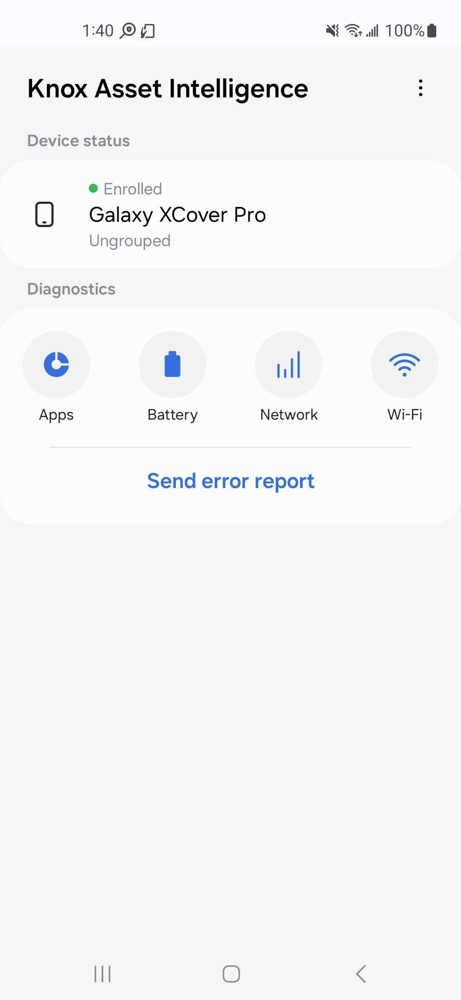

Use the agent app
Last updated November 19th, 2025
The Knox Asset Intelligence agent is responsible for enrolling devices into the service, collecting device health and usage information, and sending this information back to the server to be converted into meaningful dashboard insights. Once the agent app is downloaded and installed, device users simply launch the app to let the agent begin collecting data.

In addition to collecting device information, the agent also lets device users view diagnotic information related to apps, the device battery, and cellular and Wi-Fi networks accessed by the device. To help troubleshoot device issues, users can also send error reports and capture TCPdump logs that get sent back to the console for further analysis.
The main screen of the agent app is broken down into two main sections — Device status and Diagnostics, and a Send error report button.
Device status
Tap the Device status section to view the device’s enrollment status, IMEI, OS version, Firmware version, and other information.
Diagnostics
The Diagnostics section lets device users monitor the health and status of their devices, as well as send error reports and TCPdump logs back to IT admins for further troubleshooting. This section consists of four buttons that provide app, battery, mobile network, and Wi-Fi network diagnostic data respectively, as well as an option to send an error report.
Device health
The Device health section on the app’s home screen lets you know if your device is performing optimally, or if it has issues that require corrective actions. In the field, a Good, Normal, or Bad status is shown to indicate the overall health of your device. You can tap this status to view a consolidated Health score, along with a breakdown of the issues or events that contributed to the health score calculation.
Your device health score is calculated by deducting points from a baseline score of 100.00 whenever the device reports an event or issue that impact its performance. See Device health for a description of each event or issue that can impact your Health score.
Apps
By default, the Apps screen shows the Usage > Battery tab where users can see a list of the top five apps with the highest battery consumption over the last 24 hours.
To view the top five apps with the highest network usage over the last 24 hours, tap the Network tab instead. To view app issues like App Not Responding (ANR), Forced Closed (FC), or Abnormal events, tap the Events tab in the bottom of the screen. A list of all reported app issues over the last 24 hours is shown.
If device users encounter app-related issues, they can tap Error report from any App diagnostics screen to send a debug log to their IT admins for further troubleshooting.
Battery
The Battery screen shows the Status tab by default. Here, device users can view the state-of-health of their device’s battery, the current battery level, and other battery-related information. From this tab, users can tap Error report to send a debug log to their IT admins in order to help troubleshoot battery-related issues.
To view a record of the device’s charging history over the last 7 days, tap the History tab instead. On this tab, users can also tap the menu button (three dots) in the top right corner of the screen to either send an error report, view a chart showing battery usage trend data since the last full charge over the last 7 days, or share a charging history report with their IT admins for further analysis.
Network
The Network screen displays the mobile network signal strength of the device, along with information about the carrier network and mobile data usage.
On the chart, users can view their device’s mobile network signal strength over the last 10 seconds, updated in real time. Users can tap the Mobile data usage field to view additional usage details, or tap Error report to send a debug log to their IT admins to help troubleshoot mobile network related issues.
Wi-Fi
Status
The Wi-Fi screen shows the Status tab befault. Here, device users can view the signal strength of a Wi-Fi connection, along with information about the Wi-Fi network’s IP address, SSID, and MAC information. On the chart, users can view their device’s Wi-Fi network signal strength over the last ten seconds, updated in real time.
If Wi-Fi roaming is detected, additional roaming information is displayed. The signal strength is shown in real-time as a graph, with three statuses indicating the network latency. The status ranges are as follows:
| Status | Strength |
|---|---|
| Excellent | -67 dBm or higher |
| Very good | -68 dBm to -70 dBm |
| Okay | -71 dBm to -80 dBm |
| Not good | -81 dBm to -90 dBm |
| Unusable | -91 dBm or lower |
History
Users can tap the History tab to view the device’s Wi-Fi network connection history over the last seven days.
The history is sorted in reverse chronological order (with the newest connection event at the top), and each entry includes the connection’s:
- Date & time
- BSSID and SSID
- OUI (Organizational Unique Identifier)
- Band
- RSSI (Received Signal Strength Indicator)
- Link speed.
If no Wi-Fi connections occurred in the last 7 days, a No event message appears on the screen.
Test
On the Test tab, device users can view additional network information and send various commands to the Wi-Fi network to test for connectivity issues.
The following commands are available:
-
Single Ping: Sends a single ICMP (Internet Control Message Protocol) echo request to the network host. After the device user enters a DNS or IP address, the ping result is returned. For example, if com is entered as the DNS, it tries to request three packets at once. Assuming samsungknox.com receives three packets, the ping result shows 3 packets transmitted, 3 received, 0% packet loss. No packet loss indicates that data is reaching its destination properly. There may be a slight delay before the results are returned.
-
Continual Ping: Sends a looping ICMP echo request to the network host, which you can configure the settings for. After the device user enters a DNS or IP address, the ping result is returned. For example, if com is entered as the DNS, it continuously requests one packet at a time. Assuming samsungknox.com receives six packets, the ping result shows Sent: 6, Received: 6, Missed: 0. No packet loss indicates that data is reaching its destination properly. There may be a slight delay before the results are returned.
-
NSLookup: Queries the DNS servers for the domain mapping to the IP address. After the device user enters a DNS or IP address, the DNS records for the domain name are returned. For example, if com is entered as the DNS, its host name, canonical name, IP address, and network latency are shown.
-
Network status: Displays the details of the device’s connected network, including the host name, domain, IP address, mask, broadcast, gateway, DHCP info, WLAN DNS, and lease time. If the device is using a proxy, that information is also displayed.
-
Scan SSID: Displays the signal strength, access point MAC address, and band of the SSID the device is currently connected to.
-
Known network: Displays a list of all Wi-Fi networks the device has previously connected to.
Like with other diagnostic screens, users can tap Error report to send a debug log for their Wi-Fi network to their IT admins for further troubleshooting.
Send error report
In addition to sending error reports from the App, Battery, Network, and Wi-Fi screens, device users can also send an error report directly from the app’s home screen by tapping Send error report and selecting an error category from the dropdown.
Send TCPdump log
A special type of error report called the TCPdump log lets IT admins troubleshoot issues related to a device’s network connectivity. IT admins can request a TCPdump log from the console, or device users can initiate a TCPdump log from the Send error report screen.
Once a request is made (either from the IT admin or from the app), device users will receive a special prompt asking them to start capturing their TCPdump log.
To begin the capture, device users must do the following on their device:
- Tap Start capturing. A five-minute countdown timer appears in the top right corner of the screen. This timer can be dragged anywhere on the screen.
- Once the timer starts, try to reproduce the network error by launching any apps or performing any actions that led to the error in the first place.
- Tap the timer window after reproducing the error, then either tap Stop to send the TCPdump log, or tap Cancel to abort the capture and return to the previous screen.
- If the user taps Stop, they will get another prompt asking if they want to Send the TCPdump log to their IT admin, or Start over (resetting the five-minute timer).
When capturing a TCPdump log for the first time, a tutorial is provided on screen to walk new users through the procedure.
On this page
Is this page helpful?